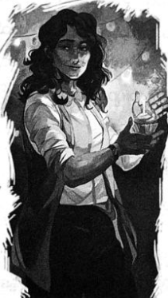

လက်သံပြောင်သော မေမေ
လမ်းပေါ်သို့ ရောက်ချိန်တွင် များစွာ နောက်ကျသွားပေပြီ။ သင်တန်းသားများ အမဲလိုက်အဖွဲ့ဝင်များ ဒဏ်ရာ ကိုယ်စီဖြင့် အတုံးအရုံး လဲကျနေကြပြီး ကလဲရစ်မှာ ဟိုက်ပါဘိုရီယန်ဘီလူးကို အရှုံးပေးလိုက်ရပုံနှင့် သူသာမက မြင်း ရထား တစ်ခုလုံးပါ ရေခဲတုံးထဲ ရောက်နေသည်။ ဆင်းတောများကို လုံးဝ မတွေ့ရ။ ကြောက်လန့် ထွက်ပြေးကြသလား၊ အငွေ့ပျံသွားခဲ့ပြီလား မပြောနိုင်။
အဆောက်အအုံကို တိုက်တန် စစ်တပ်ကြီးက ဝန်းရံထားပြီး တံခါးနှင့် ပေ နှစ်ဆယ်ခန့် အကွာတွင် ဖြစ်သည်။ ခရိုနော့စ်၏ လက်ရွေးစင်များက ရှေ့ဆုံးမှ ဦးဆောင်ကြပြီး အီသန် နာကာမူရာ၊ ဒရာကာနေးဘုရင်မနှင့် ဟိုက်ပါဘိုရီယန် ဘီလူး နှစ်ကောင်တို့ ဖြစ်ကြသည်။ ပရိုမီးသီးယပ်စ်ကို မတွေ့ရ။ ဌာနချုပ်တွင် ပုန်းနေခဲ့ပုံ ပေါ်၏။ ထိပ်ဆုံးတွင် တံစဉ် ကိုင်ကာ ရပ်နေသူမှာ ခရိုနော့စ် ဖြစ်သည်။ သူ့ကို တားဆီးသူ တစ်ယောက်သာ ရှိသည်။
“ခိုင်ရွန် …”
အန်နာဘတ်၏ အသံမှာ တုန်ယင်နေသည်။ အသံကြားခဲ့လျှင် ခိုင်ရွန် လှည့်မကြည့်ချေ။ မြားကိုအသင့်ပြင်ကာ ခရိုနော့စ် မျက်နှာတည့်တည့် ချိန်ထား၏။ ပါစီ့ကို မြင်သည်နှင့် ခရိုနော့စ်မျက်လုံးများ အရောင်တောက်ပလာကြသည်။ ပါစီ တစ်ကိုယ်လုံး အေးခဲသွားသလို ခံစားရ၏။
ခရိုနော့စ်က ခိုင်ရွန့်ကို ကြည့်လိုက်ရင်း ...
“ဘေးဖယ်စမ်း သားကလေး …”
“မဖယ်နိုင်ဘူး ….”
ခိုင်ရွန့်အသံမှာ အလွန်အေးစက်နေပြီး အလွန့်အလွန် ဒေါသထွက်နေပုံရသည်။ လုပ်ခ်က ခိုင်ရွန်ကို “သား” ဟု ခေါ်သည်မှာ ထူးဆန်းနေပြီး ခရိုနော့စ်၏ အသံမှာ ထိုသားနှင့် လုံးဝမပတ်သက်ချင်မှန်း သိသာစေသည်။ နေရာမှ လှုပ်ရှား ရန် ကြိုးစားသော်လည်း လှုပ်မရ။ အန်နာဘတ်၊ ဂရိုဗာနှင့် တာလီယာတို့မှာလည်း လှုပ်နိုင်ရန် ကြိုးစားနေကြသည်။
“ခိုင်ရွန် … သတိထား …”
အန်နာဘတ် လှမ်းအော်လိုက်ချိန်မှာပင် စိတ်မရှည်နိုင်ဟန်ဖြင့် ဒရာကာနေး ဘုရင်မ ရှေ့သို့ တိုးလာခဲ့သည်။ သို့သော် ခိုင်ရွန့်မြားမှာ နဖူးတည့်တည့် စိုက်သွားပြီး ချက်ချင်း ပြာကျသွားကာ ချပ်ဝတ်တန်ဆာသာ ကျကျန်ရစ်၏။ နောက် မြားတစ်ချောင်းဆီ ခိုင်ရွန် လက်လှမ်းလိုက်သော်လည်း မြားကျည်တောက်ထဲတွင် မြား မကျန်ချေ။ လေးကို ပစ်ချ ရင်း ဓားကို ဆွဲထုတ်လိုက်သည်။ ခိုင်ရွန်မှာ ဓားဖြင့် တိုက်ခိုက်ရသည်ကို နှစ်သက်သူ မဟုတ်မှန်း ပါစီ သိသည်။
ခရိုနော့စ် ရယ်ရင်း ရှေ့တက်လာသည်။ ခိုင်ရွန်မှာ စိတ်လှုပ်ရှားနေဟန်ဖြင့် မြင်းမြီးကို တဖျတ်ဖျတ် ခါယမ်း နေ၏။
“မင်းက သင်တန်းဆရာပဲ … သူရဲကောင်း မဟုတ်ဘူး”
“လုပ်ခ်က သူရဲကောင်း… လူကောင်းတစ်ယောက်… ခင်ဗျားကြောင့် ပျက်စီး သွားတာ …”
“အရူး ...”
ခရိုနော့စ်အသံကြောင့် မြို့တစ်မြို့လုံး တုန်ခါသွားခဲ့သည်။
“မင်းက သူ့ခေါင်းထဲကို ပေါက်ကရတွေပဲ ထည့်ထားပေးတာ … သူတို့က ငါ့ကို ဂရုစိုက်တယ်တဲ့လား …”
“ငါလို့ မင်း ပြောလိုက်တယ် …”
ခရိုနော့စ် စိတ်ရှုပ်ထွေးသွားချိန်လေးတွင် ခိုင်ရွန် တိုက်ခိုက်လိုက်သည်။ ဟန်ပြတိုက်ခိုက်ပြီးမှ မျက်နှာကို လှမ်းခုတ်ခြင်း ဖြစ်ပြီး ပါစီ ဆိုလျှင်လည်း ထို့ထက် ပို၍တတ်နိုင်မည်မဟုတ်။ ခရိုနော့စ်မှာ အလွန်လျင်မြန်ပြီး လုပ်ခ်၏ တိုက်ခိုက်မှုစွမ်းရည် အားလုံးကို ရထားခဲ့သည်။ ခိုင်ရွန်ဓားကို ဖယ်ထုတ်ပစ်လိုက်ရင်း အော်ဟစ်လိုက်၏။
“နောက်ဆုတ် …”
တိုက်တန်အရှင်သခင်နှင့် ခိုင်ရွန်တို့ကြားတွင် အလင်းရောင် စူးစူးရှရှတစ်ခု ပေါက်ကွဲသွားခဲ့သည်။ ခိုင်ရွန် လွင့်စဉ်ကာ နံရံနှင့် ဆောင့်မိပြီး အရှိန် အလွန်ပြင်းသဖြင့် နံရံပြိုကျကာ သူ့အပေါ်ပိသွား၏။ အန်နာဘတ်၏ အလန့် တကြား အော်သံ နှင့်အတူ ပါစီတို့ လှုပ်ရှား၍ ရလာခဲ့သည်။
ပါစီတို့ အတင်း ပြေးလာခဲ့သော်လည်း ခိုင်ရွန့်ကို အရိပ်အယောင်ပင် မမြင်ရ။ အုတ်ခဲများကို တာလီယာနှင့် ပါစီတို့ ဆွဲဖယ်နေစဉ် တိုက်တန်စစ်တပ်ကြီးဆီမှ တဝေါဝေါ ရယ်သံကြီး ဆိုးဆိုးဝါးဝါး ထွက်လာ၏။
“နင် … ငါ … ငါ ထင်တာက …”
လုပ်ခ်ကို အန်နာဘတ် လှည့်ကြည့်ရင်း ဓားမြှောင်ကို ဆွဲထုတ်လိုက်သည်။
“အန်နာဘတ် … မလုပ်နဲ့”
လက်ကို ပါစီ လှမ်းဆွဲသော်လည်း အန်နာဘတ်က ခါချပစ်ခဲ့သည်။ ခရိုနော့စ်ကို အန်နာဘတ် တိုက်ခိုက် လိုက်လျှင် မပြုံးနိုင်တော့။ လုပ်ခ်၏ စိတ်ထဲရှိ တစ်စိတ်တစ်ပိုင်းမှာ ထိုကလေးမ ငယ်စဉ်က ပြုစုစောင့်ရှောက်ခဲ့ပုံကို မှတ်မိ နေပုံရသည်။ အန်နာဘတ်၏ ဓားမြှောင်မှာ ပခုံးအောက်ရှိ ညှပ်ရိုးနေရာအား ထိုးလိုက်ခြင်း ဖြစ်သော်လည်း ဓားမှာ ခုန်ထွက်သွားသည်။ ပြန်ကန်ထွက်လာသည့် အားကြောင့် နဂိုက ဒဏ်ရာရထားသော အန်နာဘတ်၏ ပခုံးမှာ အဆစ် ပြန်လွဲသွားပုံ ရသည်။
အန်နာဘတ်ကို အချိန်မီလေး ပါစီ ဆွဲဖယ်လိုက်နိုင်ပြီး သူမရှိနေခဲ့သော နေရာအား ခရိုနော့စ် တံစဉ်က ဖြတ်ထွက်သွားခဲ့သည်။ အန်နာဘတ်မှာ အတင်း ရုန်းကန် အော်ဟစ်နေ၏။
“နင့်ကိုငါ မုန်းတယ် …”
သူ့ကိုပဲ ပြောသလား၊ လုပ်ခ်ကို ရည်ရွယ်သလား၊ ခရိုနော့စ်ကို ပြောချင်လား၊ ပါစီ ဝေခွဲမရ။ သူမ မျက်နှာတွင် မျက်ရည်များနှင့် စိုရွှဲနေပေပြီ။
“သူနဲ့ငါ တိုက်မှဖြစ်မယ် …”
“ငါနဲ့လည်း ဆိုင်တယ် ပါစီ ...”
ခရိုနော့စ်က ရယ်လိုက်ရင်း ……
“တယ်လည်း စိတ်ကြီးတာကိုး … မင်းကို လုပ်ခ် ဘာလို့ မသတ်ချင်တာလဲ ငါ သဘောပေါက်လာပြီ … ကံဆိုး တာက ဒါ လုံးဝမဖြစ်နိုင်တာပဲ …”
ခရိုနော့စ် တံစဉ်ကို မြှောက်ကိုင်လိုက်လျှင် ပါစီ ခုခံရန် အသင့်ပြင်လိုက်သည်။ သို့သော် ခရိုနော့စ် ခုတ်မချနိုင် ခင်မှာပင် တိုက်တန်စစ်တပ်ကြီး၏ နောက်ဘက်ဆီမှ စူးစူးဝါးဝါး ခွေးအူသံကို ကြားလိုက်ရသည်။
“ဝူး … ဝုတ် … ဝုတ် ….”
မျှော်လင့်ချက် မရှိလှသော်လည်း ပါစီ မျှော်လင့်မိသည်။
“မစ္စအိုလာရီ …”
ရန်သူတပ်များ စိတ်မသက်မသာ ဖြစ်နေကြသည်။ ထိုအခိုက်မှာပင် အလွန်ထူးဆန်းသော ကိစ္စတစ်ခု ဖြစ်လာ ခဲ့၏။ မိစ္ဆာများမှာ ဘေးဘယ်ညာ ရှောင်ပေးကြပြီး နောက်မှ တစ်စုံတစ်ရာက သူတို့ကို လမ်းဖယ်ပေးရန် တိုက်တွန်း နေသည့်ပုံ ရှိ၏။ မကြာမီ လမ်းပွင့်သွားပြီး တစ်ဖက်လမ်းထိပ်တွင် ရပ်နေသည်မှာ ပါစီ၏ ဧရာမခွေးကြီးနှင့် အနက်ရောင် ချပ်ဝတ်တန်ဆာဝတ်ထားသူ တစ်ယောက်ဖြစ်သည်။
“နီကို …”
“ဝုတ်် …”
မာန်ဖီနေသော မိစ္ဆာများကို ဂရုမစိုက်ဘဲ မစ္စအိုလာရီမှာ ပါစီ့ထံ ပြေးလာ၏။ နီကိုလည်း ရှေ့လျှောက်လာပြီး မိစ္ဆာများမှာ သူနှင့်ဝေးရာသို့ ထပ်၍ ရှောင်သွားကြသည်။ အရိုးခေါင်းပုံ ခမောက်၏ နောက်တွင် ပြုံးနေသော နီကို့ကို တွေ့ရသည်။
“မင်း သတင်းပို့လိုက်တာ ငါ ရပါတယ် … ခုမှ ပွဲထဲဝင်ပါဖို့ နောက်များ ကျနေမလား …”
ခရိုနော့စ်က တံတွေးထွေးလိုက်ရင်း …
“ဟေးဒီးစ်ရဲ့ သားလား… မင်းက သေတာ ဘယ်လိုလဲ လက်တွေ့ စမ်းသပ်ချင်လို့လား”
“ခင်ဗျား သေသွားတာကိုတော့ မြင်ချင်သား …”
“ငါက သေမျိုးမဟုတ်ဘူး … ငတုံး … တာတာရပ်စ် ကတောင် ပြန်ထွက်လာနိုင်ခဲ့တာ … ဒီမှာ မင်းအလုပ် ဘာမှ မရှိဘူး … သေဖို့ပဲ ရှိတယ်”
အနက်ရောင် စတစ်ဂျီယန်တံဓားကို နီကို ဆွဲထုတ်လိုက်သည်။
“ခင်ဗျား မှားနေပြီ …”
မြေကြီးများ တုန်ခါလာပြီး အက်ကွဲရာများဖြစ်လာကာ အရိုးစုများ ကုန်းပေါ်သို့ တက်လာကြသည်။ အရိုးစု ထောင်ချီနေသဖြင့် တိုက်တန်စစ်တပ်ကြီးမှာ နောက်ဆုတ်ပြေးရန် ပြင်နေကြသည်။
“နောက်မဆုတ်ကြနဲ့ … အရိုးစုတွေလောက်နဲ့ ငါတို့ကို ဒုက္ခမပေးနိုင်ဘူး”
ကောင်းကင်မှာ အေးစက် မှောင်မည်းလာခဲ့ပြီး အရိပ်များ ပို၍ ထူထပ်လာသလို ထင်ရ၏။ စစ်တံပိုးသံကို ကြားရပြီးနောက် အရိုးစုစစ်သည်များ စီတန်း နေရာ ယူလိုက်ကြသည်။ လက်ထဲတွင် သေနတ်၊ ဓား၊ လှံ မျိုးစုံ ကိုင်ဆောင် ထားကြပြီး အလွန်ကြီးမားသော စစ်မြင်းရထားတစ်စီး မောင်းလာကာ နီကို့ဘေး၌ ရပ်တန့်လိုက်သည်။ မြင်းများမှာ အမှောင်ထုမှ ဖြစ်လာသော အရိပ်သတ္တဝါများသာ ဖြစ်ကြသည်။ မြင်းရထားကိုယ်ထည်မှာ ရွှေသားအတိပြီးကာ ဆိုးဆိုး ဝါးဝါး သေဆုံးပုံများဖြင့် အလှဆင်ထား၏။ ရထားကို မောင်းလာသူမှာ ဟေးဒီးစ်ကိုယ်တိုင် ဖြစ်ပြီး သူ့နောက်တွင် ဒီမီတာ နှင့် ပါစီဖုန်းတို့ကို တွေ့ရ၏။
ဟေးဒီးစ်မှာ အနက်ရောင် ချပ်ဝတ်တန်ဆာနှင့် သွေးကဲ့သို့နီသော ဝတ်ရုံကို ခြုံထားပြီး အမှောင်သရဖူကို ဆောင်းထားကာ သရဖူဆီမှ ကြောက်စရာအစွမ်းများ ဖြာထွက်နေသည်။ ချက်ချင်း ထွက်ပြေးကာ ပုန်းနေချင်ပြီး ရန်သူ တပ်ကြီးလည်း ထိုသို့ပင် ခံစားရလိမ့်မည်ဟု ပါစီ သိနေသည်။ သရဖူမှာ အဆိုးဆုံး ကြောက်ရွံ့မှုများ အား တူးဆွပေး နိုင်သည်။ ခရိုနော့စ်ကြောင့်သာ မဟုတ်လျှင် အားလုံးတပ်ပျက်ကာ ပြေးကြပေပြီ။
ဟေးဒီးစ်က အေးစက်စက်ပြုံးရင်း …
“အဖေ … မတွေ့ရတာ ကြာပြီပဲ … ကြည့်ရတာ အရင်ကထက်တောင် နုပျို လာပါလား”
“ဟေးဒီးစ် … မင်းနဲ့ ကလေးမတွေ ငါ့ကိုလာပြီး သစ္စာခံကြတာလား …”
“မဖြစ်နိုင်တာပဲ … ဟောဒီက ကျွန်တော့်သားက ရန်သူတွေထဲမှာ အရေးကြီးတဲ့ ရန်သူကို ခွဲခြားသိရမယ်လို့ အကြံ ပေးတယ် …”
ဟေးဒီးစ်က ပါစီ့ကို မနှစ်မြို့စွာ ကြည့်ရင်း စကားဆက်၏။
“တချို့ကောင်လေးတွေကို ကြည့်မရပေမယ့် အဲဒီအတွက်နဲ့တော့ အိုလံပတ်စ်ကို အပျက်စီးမခံနိုင်ဘူး … ညီအစ်ကို မောင်နှမတွေနဲ့ ငြင်းရ ခုံရတာ လွမ်းစရာကြီး ဖြစ်သွားမယ် … ပြီးတော့ ကျွန်တော်တို့အားလုံး သဘောတူတာ တစ်ချက်ပဲ ရှိတယ် … အဖေက အရမ်းကို ဆိုးလွန်းတဲ့ အဖေမျိုးပဲ …”
“ဟုတ်တယ် … စိုက်ပျိုးရေး ကြောင်း လုံးဝမသိဘူး”
ဒီမီတာကပါ ထောက်ခံ၏။
“အမေ …”
ပါစီဖုန်းက ဝင်ဟန့်၏။ ဓားကို ဟေးဒီးစ် ဆွဲထုတ်လိုက်လျှင် စတစ်ဂျီယန်သံ နှင့် နှစ်ဖက်သွားဓားဖြစ်ပြီး ငွေနှင့် ဓားသွားကို ကွပ်ထားကြောင်း တွေ့ကြရသည်။
“ကဲ … တိုက်လိုက်ရအောင် … ဒီနေ့ အိုလံပတ်စ်ရဲ့ ကယ်တင်ရှင်က ဟေးဒီးစ် အိမ်တော်ပဲ …”
“မင်းနဲ့ ရန်ဖြစ်နေဖို့ အချိန်မရှိဘူး …”
မြေကြီးကို တံစဉ်နှင့် ခုတ်ချလိုက်လျှင် အရပ်ရပ်သို့ အက်ကွဲရာကြီးများ ပျံ့နှံ့သွားသည်။ စွမ်းအားတစ်ခုက ခရိုနော့စ်နှင့် ရှေ့ပြေးအဖွဲ့၊ ပါစီနှင့် သူငယ်ချင်းများကို စစ်တပ်နှစ်တပ်နှင့် ခွဲခြားပစ်လိုက်၏။
“သူ ဘာလုပ်တာလဲ …”
တာလီယာက …
“ငါတို့ကိုပါ အထဲထည့်ပိတ်ထားတာ … မန်ဟက်တန်မြို့ ပတ်ပတ်လည်က မှော်အကာအကွယ်ကို ချုံ့ပစ် လိုက်တာ … အဆောက်အအုံ ထဲမှာ ငါတို့ပဲ ရှိတယ်”
အကာအရံပြင်ပတွင် ကားအင်ဂျင်သံများကို ကြားလာရပြီး အိပ်ပျော်နေသူများ နိုးလာကြကာ မိစ္ဆာများကို မျက်လုံးပြူးကာ ကြည့်နေကြသည်။ မြူများကြောင့် သူတို့ ဘာမြင်ရမလဲ ပါစီ သေချာမသိ။ သို့သော် ကြောက်စရာ ကောင်းမည်က သေချာ နေသည်။ ကားထဲမှ ပေါလ်နှင့် အမေတို့ ထွက်လာသည်ကို မြင်ရသည်။
“မထွက်ကြနဲ့ …” ဟု ပါစီ ရေရွတ်မိသည်။
အမေမှာ မြူကို ဖောက်မြင်နိုင်သူဖြစ်ရာ ထိုတစ်ခဏ အတွင်းမှာပင် အခြေအနေ မည်မျှဆိုးနေသည်ကို သဘောပေါက်သွားခဲ့သည်။ ခပ်သွက်သွက် ထွက်ပြေးပါစေဟု ပါစီ မျှော်လင့်မိသည်။ သို့သော် အမေက ပါစီကို တစ်ချက် ကြည့်ရင်း ပေါလ်ဘက်သို့ တစ်ခုခု လှည့်ပြောကာ ပါစီတို့ဘက်သို့ ပြေးလာ၏။ အော်ခေါ်၍ မဖြစ်။ အမေတို့ကို ခရိုနော့စ် အာရုံစိုက်သွား၍ မဖြစ်။
ကံကောင်းထောက်မစွာပင် ဟေးဒီးစ်က စတင်၍ တိုက်ခိုက်လိုက်ပြီး မှော်တံတိုင်း အကာအကွယ်အား သူ့ မြင်းရထားဖြင့် ဝင်တိုက်လိုက်သည်။ သို့သော် မြင်းရထားသာ မှောက်သွား၏။ ကျိန်ဆဲရင်းမှ ဟေးဒီးစ် ပြန်ထလာပြီး အနက်ရောင် စွမ်းအားဖြင့် မှော်တံတိုင်းကို ပစ်ခတ်သော်လည်း အကာအကွယ်မှာ ခုခံနိုင်နေဆဲ ဖြစ်သည်။
“တိုက်ကြ …”
အရိုးစုစစ်တပ်နှင့် တိုက်တန်စစ်တပ်မှ မိစ္ဆာများ ရင်ဆိုင်မိလျှင် ပတ်ဝန်းကျင် တစ်ခုလုံး ရှုပ်ရှုပ်ထွေးထွေး ဖြစ်ကုန်သည်။ လူသားများ အော်ဟစ် ထွက်ပြေးကြပြီး ပုန်းခိုစရာနေရာ ရှာနေကြ၏။ ဒီမီတာ လက်ဝှေ့ယမ်းလိုက်လျှင် ဘီလူးတပ်ဖွဲ့ တစ်ဖွဲ့လုံး ဂျုံခင်းကြီး ဖြစ်သွားခဲ့သည်။ ပါစီဖုန်းလက်ချက်ဖြင့် ဒရာကာနေးတို့၏ လှံများမှာ နေကြာပန်းများ ဖြစ်ကုန်ကြသည်။ ရန်သူများကြား ဝင်ထွက်ခုတ်ထစ်ရင်း လမ်းပေါ်မှ လူများကို ကာကွယ်ရန် နီကို တစ်ယောက် အကောင်းဆုံး ကြိုးစားနေ၏။ မိစ္ဆာများကို ရှောင်ရင်း အမေနှင့် ပေါလ်တို့ သူ့ဆီ ပြေးလာနေသော်လည်း သူတို့ကို ပါစီ မကူညီနိုင်။
“နာကာမူရာ … ငါနဲ့လိုက်ခဲ့ … ဘီလူးတွေ … သူတို့ကို တားထား …”
ခရိုနော့စ်က ပါစီတို့ကို ညွန်ပြရင်း ဧည့်ခန်းထဲသို့ ဝင်ပြေးတော့သည်။ ထို တစ်ခဏတွင် ပါစီ ကြက်သေသေနေ မိပြီး ခရိုနော့စ်မှာ သူ့ကို လုံးဝဂရုမစိုက်ဘဲ ထွက်သွားမည်ဟု မထင်မိ။ ထို့နောက် ပါစီ အလွန်စိတ်ဆိုးလာ၏။
ဟိုက်ပါဘိုရီယန် ဘီလူးတစ်ကောင်က ပါစီကို တင်းပုတ်ဖြင့် ထုလိုက်လျှင် ခြေထောက်ကြားမှ လှိမ့်ရှောင်ရင်း လှိုင်းခွဲဓားဖြင့် ကျောကို ထိုးပစ်ခဲ့သည်။ ဘီလူးကြီးမှာ ရေခဲတုံးများအဖြစ် ပြိုကျသွားခဲ့သည်။ ဒုတိယ ဘီလူးက ရေခဲမှုန် များနှင့် အန်နာဘတ်ကို မှုတ်လိုက်ရာ မတ်တတ်ပင် မနည်းရပ်နေရသော အန်နာဘတ် မရှောင်နိုင်။ သို့သော် သူမကို ဂရိုဗာက ဆွဲဖယ်လိုက်သည်။ တာလီယာက ဘီလူးကြီး၏ ကျောပေါ်ပြေးတက်ကာ လည်ပင်းကို ဓားနှင့်ခုတ်ဖြတ်ရင်း ကမ္ဘာ့အကြီးဆုံး ခေါင်းပြတ် ရေခဲရုပ်တုကြီးကို ဖန်တီးလိုက်သည်။
မှော်အကာအကွယ် အပြင်တွင် နီကိုမှာ အမေနှင့် ပေါလ်ရှိရာဘက်သို့ တိုက်ခိုက် ထိုးဖောက်၍ သွားနေသည်။ သို့သော် အမေတို့မှာ အကူအညီရသည့် အချိန်ကို စောင့်မနေကြ။ ကျဆုံးနေသော သူရဲကောင်း တစ်ယောက်လက်မှ ဓားကို ပေါလ် ကောက်ယူလိုက်ပြီး ဒရာကာနေး တစ်ကောင်နှင့် ဓားချင်းယှဉ်ခုတ်ကာ ပြာကျသွားစေရန် ဝမ်းဗိုက်ကို ဓားဖြင့် ထိုးသတ်လိုက်နိုင်သည်။
“ပေါလ် …”
အံ့ဩနေသော ပါစီ့ဘက် လှည့်ကြည့်ရင်း ပေါလ်က ပြုံးလိုက်သည်။
“ငါ သတ်လိုက်တာ မိစ္ဆာဖြစ်ပါစေ မျှော်လင့်ရတာပဲ … ကောလိပ်မှာ ပြဇာတ် ကဖို့ ဓားသိုင်း နည်းနည်း သင်ခဲ့ ဖူးတယ် …”
ထိုအခိုက်တွင် လက်စ်ရီဂိုနီးယန်း ဘီလူးတစ်ကောင်မှာ ရဲကား အလွတ် တစ်စီးထဲ ရှာဖွေနေသော အမေ့ထံ ပြေးဝင်လာ၏။
“အမေ …”
အမေလှည့်ကြည့်လိုက်ချိန်တွင် ဘီလူးမှာ သူမအနီးသို့ ရောက်နေပေပြီ။ ရဲကားထဲမှ ရလာသော ရိုင်ဖယ်သေနတ် ကို မောင်းတင်ပြီး အမေ ပစ်ချလိုက်လျှင် ဘီလူးမှာ ပေနှစ်ဆယ်မျှ လွင့်စဉ်ကာ နီကို့အနီး ရောက်သွားပြီး ဓားစာ မိသွားတော့သည်။
“အမေ ဘယ်တုန်းက သေနတ် ပစ်တတ်သွားတာလဲ …”
ပါစီ မမေးဘဲ မနေနိုင်။
“လွန်ခဲ့တဲ့ နှစ်စက္ကန့်လောက်ကပဲ ပါစီ … သွားတော့ ... ဒီမှာ အမေတို့ ထိန်းထားလိုက်မယ် …”
ထိုစကားကို နီကိုကပါ ထောက်ခံ၏။
“ဟုတ်တယ်… ဒီတပ်တွေကို ငါတို့တာဝန်ထား … မင်းက ခရိုနော့စ် နောက်ကို လိုက်တော့”
“ရေညှိဦးနှောက် … သွားကြစို့”
အဆောက်အအုံတစ်ဖက်မှ အုတ်ပုံကိုမြင်လျှင် ခိုင်ရွန့်ကို မေ့ထားခဲ့မိကြောင်း သတိရလာ၏။
“မစ္စအိုလာရီ … ခိုင်ရွန့်ကို တူးထုတ်ပေးပါ … သူ့ကို တွေ့အောင်ရှာပြီး ကူညီလိုက်ပါ ..”
သူ့စကားကို မည်မျှထိ နားလည်သလဲ မသိနိုင်သော်လည်း မစ္စအိုလာရီမှာ အုတ်ပုံကြီးကို ချက်ချင်း တူးဆွ တော့သည်။
ပါစီ၊ အန်နာဘတ်၊ တာလီယာနှင့် ဂရိုဗာတို့ ဓာတ်လှေကားဘက် အပြေး ထွက်ခဲ့ကြသည်။
♦️🌟♦️